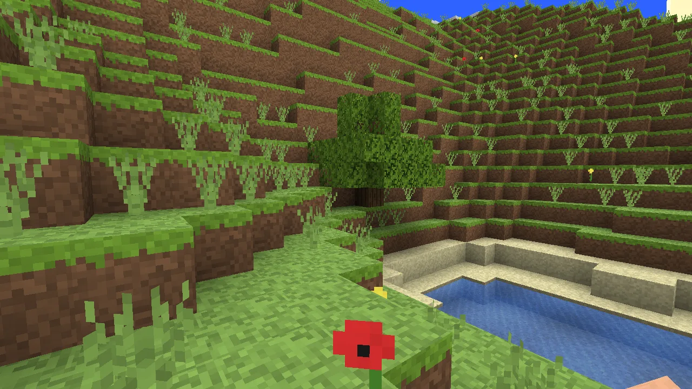

Playable showcases
Small games.
Whole new worlds.
3D games built from public three-game-kit Features.
Pick a world. Play in your browser.

Craftlands
Survival Sandbox
Playable showcases
3D games built from public three-game-kit Features.
Pick a world. Play in your browser.

Survival Sandbox